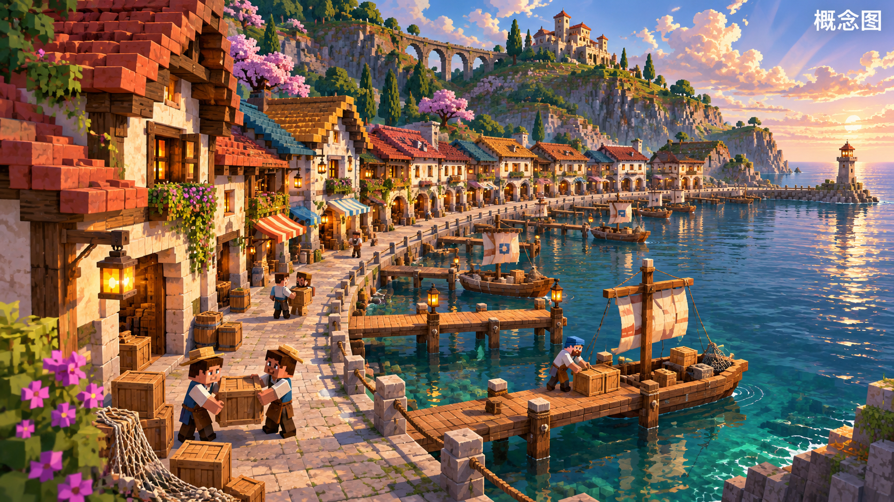
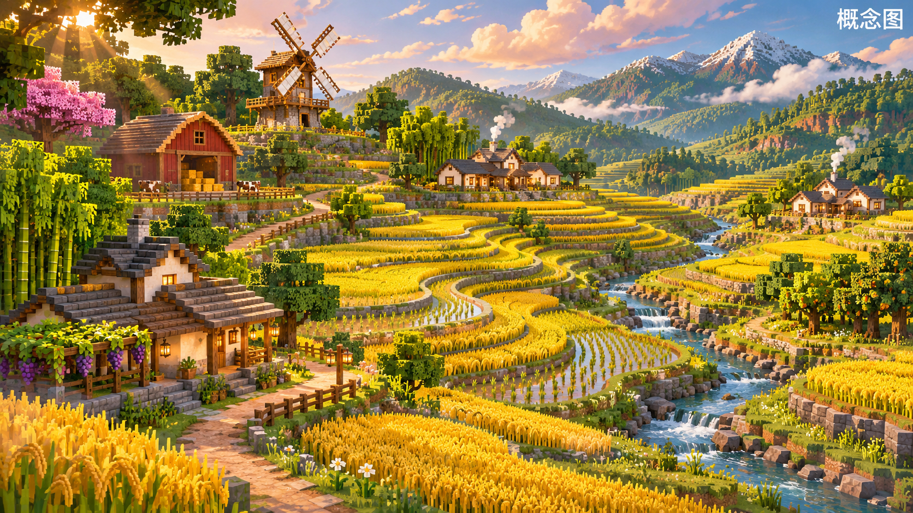
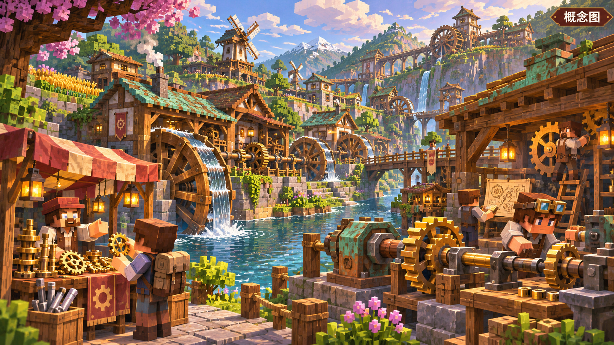
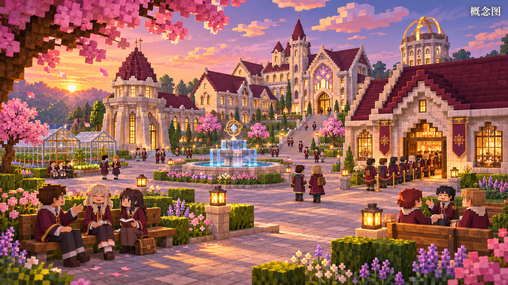
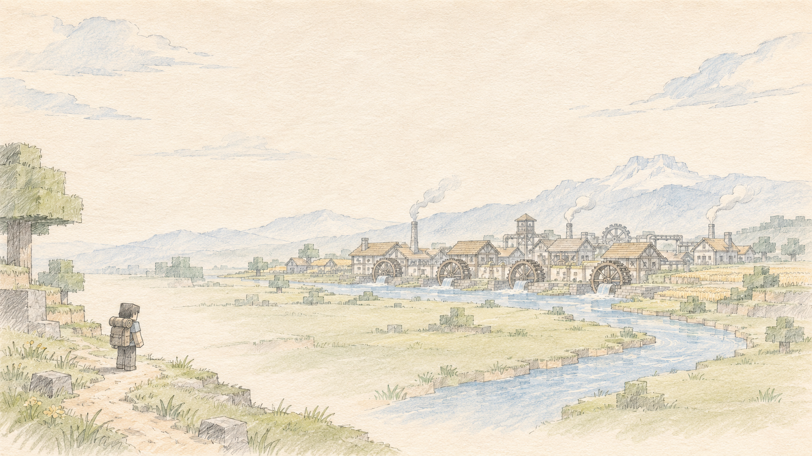

展望
城建好了，迟早要住人
那个每天有人坐着聊天的院子
南宿院查房：56 个学生 · 56 张床

顺着真实的海岸线排第一排面朝大海，码头往水里伸

田地和树林是主角谷仓、风车、两三间小屋，稀稀落落
程序已写好 · 等进游戏验收
社团最强的多模态
眼睛看画面
脚去走一圈
心里知道舒不舒服
港口和田野，等社长验收
"北边的港口新到了一批船"
传闻都有来处，
跟着去看，
真能找到那个地方
跟着去看，
真能找到那个地方
每种爱好，都能找到自己的文明

"动态配出来"
告示板
委托
修好北边水车
报酬面议
节日 · 机械竞速赛

今天：魔法学院
换个人开一局：另一个文明

遇见
机械动力城
机械动力城
手账速写
每一局，都是不同的异世界
故事和剧情，由我们相遇，由我们书写